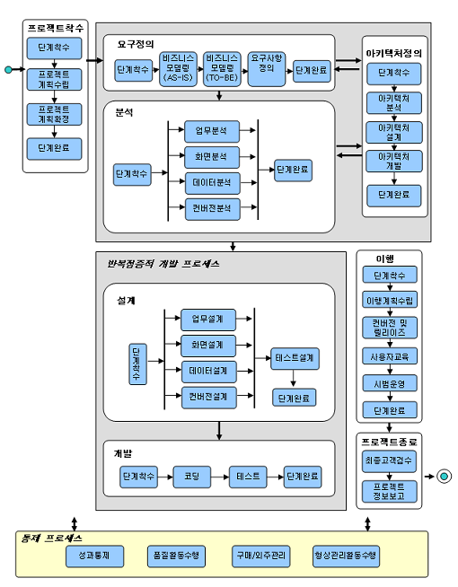

| Concept: 표준 Eng.방법론 소개 |
 |
|
|
1. 개요(Overview) 표준Eng. 방법론은 IE(WEB), OO(WEB), CBD(J2EE)의 상이한 공정을 개편함으로써 공정과 산출물을 표준화하여 JAVA기반의 어플리케이션을 개발하기 위한 e-INNOVAOER 방법론 모듈이다. JAVA기반 어플리케이션을 개발할 때 단일한 방법론 모듈을 채택하고, 표준도구 와 기법을 적용함으로써 분석/설계/개발과정에서 표준화된 자산이 축적되고 재사용할 수 있는 기반을 제공한다. 표준Eng. 방법론은 UML기반의 단일화된 표기법으로 모델링하며, CBD의 경우 컴포넌트 식별과 설계를 Add-On 할 수 있도록 구성되었다. 또한 기존의 중복된 공정을 제거하고 산출물을 최대한 간소화하여 Light Weight한 방법론이 되도록 구성하였지만 기법과 가이드는 구체화하여 현장 적용이 용이하도록 구성 하였고, 소프트웨어 아키텍처 정의 및 검증에 대한 공정을 표준화하여 아키텍처 기반 소프트웨어 개발이 가능하도록 구성하였다. 표준 Eng.방법론은 표준공정의 각 단계에서 적용할 수 있는 최적화된 표준 툴을 제공하여 소프트웨어 생명주기의 모든 단계에서 툴 기반 Engineering 수행체계를 구축할 수 있도록 구성하였다. 2. 표준 Eng. 방법론의 특징(Characteristic) 표준 Eng. 방법론은 다음과 같은 특징을 갖는다. - OMG의 표준 모델링 언어인 UML 다이어그램을 전 개발 생명주기를 통해 적절히 활용함으로써 일관성 있는 모델링과 산출물 작성이 가능함. (UML 2.0 표준) - 반복 점증적 개발 프로세스 적용(Iterative & incremental development process) - 표준 기술 플랫폼인 J2EE를 적용할 수 있도록 공정 및 산출물 을 제시 - 유스케이스 기반의 요구사항 관리 및 전 개발공정을 통한 진척관리로 추적성 확보 - 방법론의 표준 프로세스에 최적화된 통합개발플랫폼을 제시하여 산출물간 연계성 강화 - 통합빌드환경제공(CTIP)제공 및 유스케이스 중심의 통합테스트로 결함예방 방안제시 3. 공정 흐름도(Process Flow Diagram) 
4. 단계 설명 (Phase Description) 4.1 프로젝트 착수 - 영업/제안/계약 단계에서 수행한 결과물을 토대로 분석된 프로젝트의 다양한 제약조건과 가정을 고려하여 프로젝트의 관리의 영역 (Scope, Schedule, Cost, Quality, HR, Communication, Subcontract, Risk)별 상세한 계획을 수립한다. 4.2 요구정의 - 시스템이 적용될 조직의 구조와 연관 관계를 분석한다. - 현 프로세스 (AS-IS) 분석을 통해 문제점을 도출하고, 개선 프로세스 (TO-BE)를 정의한다. - 현 시스템 분석을 통해 문제점을 도출하고, 시스템 개발에 대한 타당성을 검토한다. - 고객, 사용자, 개발자 간에 대상 업무 도메인에 대한 공감대를 형성한다. - 사용자 요구사항을 도출하고 유스케이스 중심으로 요구사항을 구체화 한다. - 요구사항을 구체화 하는 과정에서 고객과 원활한 의사소통을 위하여 프로토타이핑을 병행한다. - 유스케이스로 상세화된 요구사항에 대하여 시스템 범위를 정하여 요구사항의 베이스라인을 확정한다. 4.3 분석 - 요구정의 단계에서 정의된 요구사항을 시스템 기능으로 정형화하고 구현환경과는 독립적으로 시스템을 구조화한다. - 사용자의 기능적 요구사항을 상세화하고, 시스템의 기능 구현을 위해 필요한 분석클래스를 도출하여 정의한다. - 사용자와 시스템 간의 상호작용을 위한 화면을 정의하고 화면 간의 이동관계를 정의한다. - 기존 시스템의 데이터 분석 및 요구사항을 반영하여 목표 시스템의 데이터 구조를 정의한다. - 기존 시스템의 데이터를 분석하여 오류 데이터를 추출하고, 정비 룰을 정의하거나 직접 데이터를 수정한다. 4.4 아키텍처정의 - 요구정의와 분석 시점에 시스템 구축을 위한 아키텍처 및 설계의 주요 구성요소에 대한 설계원칙과 방향을 제시한다. - 아키텍처 분석 : 사용자의 핵심요구사항 및 현행시스템의 문제점을 인식하고 To-Be 시스템의 “Big Picture”와 설계전략을 정의한다. - 아키텍처 설계 : 구축하고자 하는 시스템의 구성 및 각 주요 구성요소에 대한 설계방안을 정의 - 아키텍처 개발 : 설계된 아키텍처를 바탕으로 Prototyping 시스템을 구축하여 상세설계 및 개발의 기반을 정립 4.5 설계 - 분석단계에서 파악된 무엇(What)에 대하여 시스템 구현 관점에서 어떻게(How) 해결할 것인가를 결정한다. - 개발/운영 환경 및 성능을 고려한 시스템 설계가 되도록 한다. - 테스트 관리자가 테스트 계획 및 테스트 수행자의 역할 및 절차를 수립하고 시나리오를 작성한다. 작성된 계획서에 대하여 인수책임자의 승인을 확보한다. 4.6 개발 - 작성된 설계산출물을 바탕으로 해당 플랫폼에 맞춰서 코딩을 한다. - 플랫폼에 맞춰서 작성된 설계명세서에 따라 실행 가능한 소스코드를 작성한다. - 통합빌드를 통하여 주기적으로 자동화된 빌드를 수행하며 단위 테스트를 실시하여 완전성을 검증한다 - 단계별로 해당하는 테스트를 실시하고 테스트 결과를 검토하여 필요한 조치를 취한다. 해당 시스템의 운영환경에 맞도록 성능 튜닝을 실시한다 4.7 이행 - 테스트된 시스템을 고객이 인수한 후에 원활하게 사용할 수 있도록 필요한 작업을 수행한다. 4.8 프로젝트종료 - 최초 고객에게 제출하기로 약속한 프로젝트의 산출물에 대하여 고객 측 인수책임자의 검수 및 승인을 받도록 한다. - 프로젝트 종료 후 고객이 안정적으로 제품을 사용하도록 하기 위한 A/S 또는 유지보수 계획을 고객과 함께 수립하도록 한다. ※ 반복 점증적 개발프로세스 설계, 개발단계는 반복 점증적 개발프로세스에 포함되며 개발 프로젝트에 따라서 순차적으로 여러 차례 반복된다. ※ 통제 프로세스 프로젝트 착수부터 종료에 이르기까지 어느 시점에서든지 공통적으로 나타날 수 있는 프로세스로서 프로젝트의 WBS상에서는 특정 시점을 정의하기가 어렵다.
|